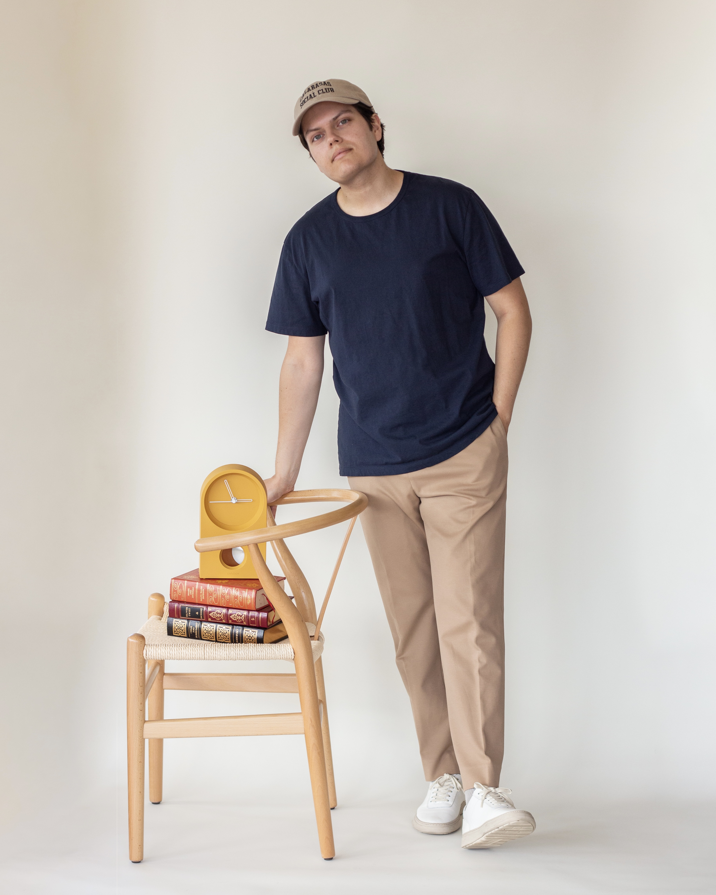
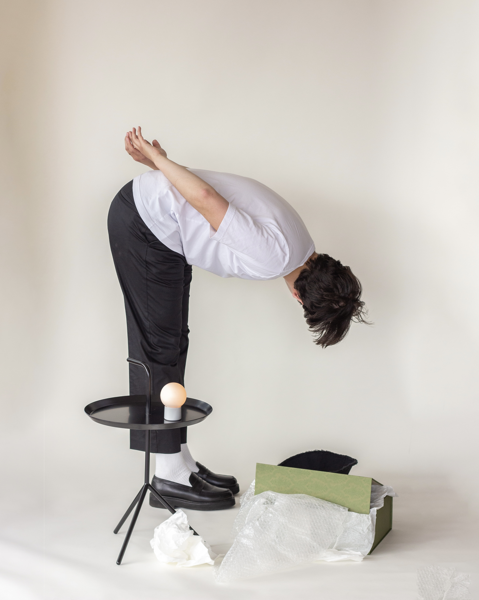

June 7
Not Another Basic Tee
Some of my favorite t-shirts to have stood the test of time.

You’ve heard it once, you’ve heard it twenty times, “the key to an essential wardrobe is a quality t-shirt.” Yes this has some truth to it, but isn’t it a given? A t-shirt is just a t-shirt right? They’re all basically the same. On the surface, there isn't much to a basic tee; it's a simple staple we are all used to. But look a little further and you’ll notice your preference on how the shirt lays, the weight of the fabric, texture, and so many other elements that contribute to a quality tee.
Over the years I’ve tried several brands - some I loved, others I hated, many I was indifferent about. Rather than blabbing on about which t-shirts got the ‘Christopher badge of a approval’, I’ve narrowed it down to just 1 t-shirt per category - light weight, medium weight, and heavy weight. I feel like this is the best way to divide up a simple wardrobe item to offer a preference for anyone looking to up their wardrobe with a nice tee.
The Light Weight Option:
Sunspel Classic Cotton T-Shirt
Sunspel Classic Cotton T-Shirt: Every summer I seem to struggle finding a lightweight option which doesn't fall apart by the end of the season. This is the bad wrap that so many lightweight tees get since quality is so easily compared with fabric weight. The classic cotton t-shirt from Sunspel proves that theory to be false. They do a fantastic job at delivering a silky soft summer-ready tee that keeps its form even after several washes. Let it be known this one does come in at a higher price, but if ever a brand is worth a pretty penny it would be this one.
Shop Now
The Medium Weight Option:
ASKET The T-Shirt

ASKET The T-Shirt: These guys have been in the industry of essentials since 2015 and have spent that time perfecting the most basic wardrobe staple - the t-shirt. With 3 length options (short, regular, & long) you can rest assured that you'll be getting a perfect fit with every piece. Although their lightweight tee has just as much to rave about, their classic option holds true to its structure and is the perfect in-between of the lighter and heavier cotton alternatives.
Shop Now
The Heavy Weight Option:
Son of a Tailor Cotton T-Shirt

Son of a Tailor Cotton T-Shirt: Have you ever had a t-shirt custom made to your exact preferences? Yeah, me either. Son of a Tailor was born on this idea of creating made-to-order pieces exactly how you like them. You prefer a wider torso? They'll add a few inches to give you that comfy roomy feel. Their cotton t-shirt comes in either a medium or heavy weight, but the heavy weight option creates such a nice sillouette that offers that high quality feel of a heavier fabric. Not only does this feel like a luxury customer experience, but the shockingly normal prices make this brand even more worth it.
Shop Now